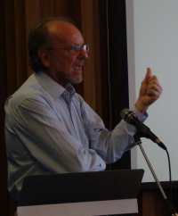

|
 |
TEACHING PSYCHOLOGY IN SWITZERLAND AFTER THE BOLOGNA REFORMTo understand the situation of teaching psychology in Switzerland it is useful to keep in mind that this country is a confederation with 26 ministers of education and four national languages (German, French, Italian and Romansh). But as far as the scientific activity is concerned, Switzerland can be considered a bilingual country, the universities being established in the most important German or Frenchspeaking cities. There is at least one department of psychology in each of the 9 universities. They are under the control of cantonal political institutions, which provide a significant part of the budget. Recently the federal administration has tried to promote a better coordination between universities. Universities differ as to how psychology is institutionalized academically: psychology may be part of a faculty of philosophy, of social sciences, of economics and law, or a separate faculty on its own (Geneva). In addition, universities differ widely in the size of psychology departments (in terms of faculty and students, ranging from less than 100 up to over 1200 psychology majors). There is still no federal regulation regarding training in psychology or private practice. Some cantons have a regulation about the practice of psychology or psychotherapy, others don't. However a project of law is discussed; it plans to create a set of federal conditions that would apply to all psychology students. The so-called Bologna reform has been introduced in the Swiss Universities in the recent years. The reform has changed mainly the number of years necessary to get a degree in Psychology. The standard of an eightsemester curriculum for the training in psychology was widely recognized; from now on it is necessary to study at least ten semesters to get a Master of Science in Psychology. In most systems the training is conceived to be broad during the three first years (Bachelor), specialization occurring only in the Master program. The intention of most departments of psychology was to keep the same system of psychology teaching, in part because they had to teach one more year without new positions. Nevertheless it seems clear that the students have changed their conception of their training of psychology. Before the Bologna reform most students completed their entire training in the same university. Among the first two groups of students who got a Bachelor of Science in Psychology, the trend seems quite different; many students took advantage of the opportunity to move to another academic institution. We will bring data to illustrate more precisely this aspect of the changes that occurred during the last few years. We will report the first results of a survey intended to understand the motivations of students when choosing their master program. Because some changes were not anticipated precisely, several departments need to reconsider their program. It will be interesting to observe how this challenge will be solved in the next few years. |
© 2008 Victor Karandashev